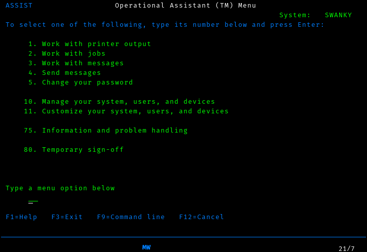

ADVENT OF COBOL: Day 1
Every year, Eric Wastl hosts an event called Advent of Code, which consists of two coding challenges per day from the first of december through Christmas day. The first few challenges tend to be fairly simple, but then they gradually increase in difficulty through the event.
This makes Advent of Code a wonderful way to learn a new language or platform, and last year I used it as an excuse to learn Forth. This year, I decided to try a new system, and wanted something that was decidedly different from anything I had worked with before. So, of course I reached for the strangest platform I have access to: COBOL on IBM i.
IBM i (formerly i5/OS, and before that, AS/400) is IBM’s lesser known server platform for businesses not large enough to need a mainframe. They intended it to be a server appliance for small businesses, but they left the design in the hands of a research team in Rochester, who came up with a very unusual design. For a start, the primary way that most users would interact with the system is a “green screen” block mode terminal [1]. When you start trying to write code for it, the documentation instructs you to first create a “source physical file”. This got me curious what other kinds of files there were, and after some investigation I realized that “physical file” is the IBM i term for a database table, and “logical file” is the IBM i term for a view. In other words, even your source code is stored in database tables. The platform is based around a single-level store, which basically means that every file in the system is constantly mapped into memory, and always has the same address; to accomplish this, pointers are 128 bits long and the system has special hardware to verify that a value in memory is OK to use as a pointer.
In short, we’re not in Kansas anymore.
Note for people who want to follow along
My hope is that you, dear reader, will be able to follow along on your own and perhaps learn a new system along with me.
It can be tricky to get access to an IBM i machine, and even once you do, learning how to operate the editor and operating system will take some time. I’ll write more about how to take your first steps with IBM i later, but for now, you can go to PUB400 and request a free account. In order to actually use it, you’ll need a 5250 emulator; I recommend either iACS or tn5250j.
IBM’s documentation for i is very complete, but it was written in a time when the hardware would come in one box, your 5 meters of documentation would come in a second, and a friendly field engineer would come in a third to install the machine for you. As such, you’ll be spending a lot of time at first just looking through the documentation to find the details you need.
For today, just go to Compiling, Running, and Debugging COBOL programs for a tutorial on operating the editor and compiler; I’ll try to explain everything else you need. In the future, I’ll be skipping over the basics and talking only about new things, so if you find this intolerably slow, it will get better.
Getting started
Firstly, I needed to get the data into a form that I can use from IBM i. Considering that the system really wants to use record-based I/O [2], we first need to create a physical file and load the data into it.
We have two options for how to create a physical file. SQL is always an option, but I prefer the old-fashioned approach (creating data description specifications), so that’s what we’ll do here.
First, though, we need a source physical file to write our code in, and it’s probably best to first create a library (akin to a directory in UNIX or a schema in SQL) to keep everything together. You can create the library by typing the following command:
CRTLIB ADVENT2020
The command to create a source file is a bit more complex, and it would
be really nice to be able to have an on-screen reference as we put our
command together. Fortunately, i has our back. Just type CRTSRCPF
and press F4. You’ll get the following screen:

It is common to split your source up by the language it’s in. However,
for simplicitly, I’ll just keep all my source in a single file called
adventsrc. We also want to have somewhat longer lines than the
default, so we’ll create our source file with a record length of 112.
While we could just hit enter here to run the command, it’s worth examining this screen more closely first, as you’ll be using screens like this a lot and there’s a lot more you can do here.
First, you’ll notice that there are a list of function keys at the
bottom of the screen, including F13 and F24. If you look closely
at your keyboard, however, you’ll find that the F keys only go up to 12.
Fortunately, you can reach F13 by pressing Shift-F1, F14
using Shift-F2, all the way up to Shift-F12 for F24. I’ll
use the names listed on the screen, and let you translate them in your
head, as it’s both good practice and how I think about it in my head.
It’s worth pressing F13 here to see how to use this screen to the
extent of its abilities, but for now just press F24 a few times to
flip through all the keys you have available. Perhaps the most
interesting are F9, which shows you all the options available to you
(of which there are too many to shake a stick at), and F14, which
shows you that you could have skipped the entire screen by typing the
command
CRTSRCPF FILE(ADVENT2020/ADVENTSRC) RCDLEN(112)
Once you’re done exploring that screen, press enter to submit the command, and now we’re ready to start writing our code.
From this point on, I won’t discuss the interface in depth; just know
that you can nearly always get help by pressing F1, have the system
offer you a prompt by pressing F4, exit a little by pressing
F12, or exit a lot by pressing F3.
To enter the editor, run the command
strseu srcfile(advent2020/adventsrc) srcmbr(advdta011) type(pf)
As you can see, very little is case-sensitive here.
Enter the following code:
A R ADVDTA011
A DATA 4SThis specifies a record format named ADVDTA011 with a single column
named DATA that is a 4-character-wide decimal. I won’t go into
detail on it, because
-
There’s not a lot going on here
-
IBM’s documentation covers it far better than I could
Next, we need to turn this into an actual physical file:
crtpf file(advent2020/advdta011) srcfile(advent2020/adventsrc)
Now we just need to get our data into this file. There are a variety of ways to do it, but the way that I did it was to copy the file to my home directory in PASE (yes, IBM i has a complete UNIX-ish system on the side, but be warned that it is very strange. For a start, it’s based on AIX, which is at best maliciously compliant with POSIX).
I got my file in using scp, then used cpyfrmimpf command to
actually load the data into my physical file (Note: this is formatted
as multiple lines for clarity, but you’ll need to enter all of the options on a
single line):
CPYFRMIMPF FROMSTMF('/home/thequux/advdta011.csv')
TOFILE(ADVENT2020/ADVDTA011)
RCDDLM(*ALL)
MBROPT(*REPLACE)
If everything went well, then this should complete successfully. You can
see the data in the file by running STRDFU, selecting option 5
(“Update data using temporary program”), and then specifying the name
of the physical file we created earlier.
I thought this was going to be about COBOL…?
That, unfortunately, is as long as we’re going to be able to procrastinate; it’s time to grit our teeth and start writing COBOL for real. This is going to be a bit unpleasant, so we’ll take it piece by piece.
The structure of a COBOL program is very strictly regimented. Your code is sorted into divisions, which then are divided into sections, and your statements only appear within those sections. (well, there are also paragraphs and sentences, but I don’t understand those divisions completely, so let’s just ignore them, shall we?)
Create a source member called ADVENT01.1 with type CBLLE in
ADVENT2020/ADVENTSRC, and start typing.
IDENTIFICATION DIVISION.
This one is very simple, and I hope self-explanatory.
IDENTIFICATION DIVISION.
PROGRAM-ID. "ADVENT01.1".
AUTHOR. TQ Hirsch.’nuff said.
ENVIRONMENT DIVISION.
Here we have two sections:
ENVIRONMENT DIVISION.
CONFIGURATION SECTION.
SOURCE-COMPUTER. IBM-ISERIES.
OBJECT-COMPUTER. IBM-ISERIES.
SPECIAL-NAMES. REQUESTOR IS CONSOLE.To be honest, I copied this directly from the IBM documentation. The
SOURCE-COMPUTER and OBJECT-COMPUTER paragraphs are not used for
anything, but they seem to be a sensible place to document exactly
which variant of COBOL we’re using. The SPECIAL-NAMES paragraph,
though, does do something useful, though we don’t actually take
advantage of it.
It turns out that IBM i has two I/O streams: a system console and the
“requestor” (which may be an interactive terminal, or it may be a job
log for batch programs). The declaration REQUESTOR IS CONSOLE
essentially says “when I do I/O to CONSOLE, I really mean REQUESTOR.
Don’t bother the sysop with my blathering.”
As it turns out, we won’t do I/O to CONSOLE in this program, so we don’t get any benefit from this section at all, so it was a complete waste of time. Let’s be honest with ourselves, though; you would have used it reading Hacker News anyway, so nothing of value was lost.
INPUT-OUTPUT SECTION.
FILE-CONTROL.
SELECT SCAN1 ASSIGN TO DISK-ADVDTA011
ORGANIZATION IS SEQUENTIAL
ACCESS MODE IS SEQUENTIAL.Aha! Now we’re getting out of the boilerplate and getting into something that’s actually relevant to us. This is where we actually define which files we’re going to be using. Here, we say that we’ll want to access the file ADVDTA011 using the name SCAN1, and we’ll always start with the first record in the file and read them in sequence. There are other types of file organization as well: relative mode lets you jump to records by number, and indexed mode works lets you access records by their primary key.
DATA DIVISION.
As the name indicates, here’s where we’ll divide up our data.
DATA DIVISION.
FILE SECTION.
FD SCAN1.
01 S1DTA PIC 9999.Oh, you thought we were done with files, did you? Nope, we still need to define what each record looks like. Here we say that the file that we refer to as SCAN1 has one field, named S1DTA, and it looks like “9999”. The PIC keyword, you see, says “Here’s a picture of what this data will look like!”, and then we have four 9’s, because we want to be able to store four digits in it.
LOCAL-STORAGE SECTION.
01 CALC-RESULT PIC 99999999.
01 PRODUCT PIC 99999999.
01 NREC PIC 99999 VALUE IS 0.
01 NUMBERS-TABLE.
05 SEEN-NUMBERS OCCURS 2020 TIMES PIC 1 VALUE IS B"0".There are two similar sections, LOCAL-STORAGE and
WORKING-STORAGE, of which we’ll only use one. Both contain variables
local to the procedure; the main difference between them is that working
storage is shared between all invocations of a procedure, whereas local
storage is specific to the invocation. For our purposes, this
distinction doesn’t matter, but it’s good practice to use local storage
if you can.
To explain our variables, I’ll need to explain the algorithm we’ll be using. The most obvious algorithm is to test each pair of records; if they sum to 2020, we’ve found our solution. However, it’s much more efficient to remember which values we’ve seen and simply check whether we’ve already seen the other number in the pair.
Thus, we can see what variables we need:
-
A pair of variables to store intermediate caluclation results (
CALC-RESULTandPRODUCT). Note that these are 8 digits long, so that we can fit the full product of two 4-digit numbers into it. -
A variable to store the number of input records, for diagnostic purposes (
NREC). -
Finally, an array of booleans to indicate which values we’ve already seen (
PIC 1is an IBM extension that stores a boolean).
There is another aspect to all of all of these definitions that I’ve
ignored so far: the level (here, 01 and 05). COBOL does support
structures (which it, perhaps confusingly, calls records); each variable
that doesn’t have a level number of 01 forms a part of the record
stored in the last variable with a higher record number. The only reason
we use a record here is that, for some reason I don’t understand, the
OCCURS clause is not valid on variables with a level of 01, but
every variable must be part of a record with level 01.
PROCEDURE DIVISION.
Now we get to the meat of our program.
PROCEDURE DIVISION.
MAIN-PROCESSING SECTION.
SETUP.
OPEN INPUT SCAN1.Execution starts at the beginning of the procedure division. We’ll only
have one section, which we’ll call MAIN-PROCESSING; this name is
irrelevant and you can already forget it. Next we start a paragraph
named SETUP, which makes sense; the first thing we need to do is
open our file for input.
MAIN.
READ SCAN1 NEXT RECORD AT END
DISPLAY "NO MATCHING VALUES FOUND AFTER " NREC " RECORDS"
GO TO ENDPGM
END-READOh, now we’re getting to the famous COBOL verbosity.
We have a loop here, although that may not be obvious considering that
the control flow is all done using GO TO. Each time through the
loop, we try to read a record from SCAN1. If we reach the end of the
file, we print a diagnostic and bail out.
ADD 1 TO NREC GIVING NREC
IF S1DTA IS GREATER THAN 2020 THEN
GO TO MAIN
END-IFWe incrememnt the record counter (and find ourselves pining for
C++), then check whether the record we just read is too large to
possibly be part of a pair that sums to 2020. If so, we simply jump back
to MAIN to read the next record.
SUBTRACT S1DTA FROM 2020 GIVING CALC-RESULT
IF SEEN-NUMBERS(CALC-RESULT) IS EQUAL TO B"1" THEN
MULTIPLY CALC-RESULT BY S1DTA GIVING PRODUCT
DISPLAY CALC-RESULT " * " S1DTA " = " PRODUCT
GO TO ENDPGM
END-IF
MOVE B"1" TO SEEN-NUMBERS(S1DTA)
GO TO MAIN.First, we compute what number we need to make a winning pair, then check whether we’ve seen it yet. Of course, you can’t simply use a boolean as a condition; you need to see if it’s equal to true. Joy.
If we have, in fact, seen the number already, we compute the product of the number and its pair, and bail out. Otherwise, we remember that we’ve seen the number and go back to read the next number.
ENDPGM.
ACCEPT CALC-RESULT
CLOSE SCAN1
STOP RUN.Here we read a value, to make sure that the person running the program sees the result, close our file, and exit. In an earlier version, I failed to close the file first; when I needed to change the format of the file, that failed because it turns out that open files are shared across an entire “activation group”, and the activation group that this had run in was my login session. Oops. So, close your files when you’re done with them!
Compiling and running it
This is easier than you might think; you can type in a compiler command if you like, but it’s much easier to compile your program using PDM, the Program Development Manager.
If you haven’t been using it already, start PDM by running
WRKMBRPDM ADVENT2020/ADVENTSRC
Each source member in the file is listed, and you can work with a member
by typing an option into the Opt field before each member. We want
to compile, which is option 14, so we put that in:

and press enter:

Well that was anticlimatic. In order to see whether that was successful,
we need to look at the printer output. Press the ATTN key (on most
5250 emulators, this is ESC, though with TN5250j, you’ll need to map
a key to it because ESC is normally System Request, which you won’t
use so much. System Request is still useful, so I’d remap that to
Shift-ESC)
You’ll get the operational assistant menu:

Here you can do two useful things: access your messages (see that MW
in the status area? That’s your message waiting light) and access
printer output. We’ll start by accessing our messages; here we find out
that our compile succeeded, but there’s no interesting details. For
those, we need to look at the printer output. Just clear your messages
using F16 and then back out to the operational assistant menu using
F12.
Unlike the message display, where the most recent message was clearly at the top, the printer output display has the most recent prinout at the bottom. Go there (you may need to page down a few times first), and use option 5 to display the report and find yourself struck with a sudden understanding of why greenbar paper was sold in 2000-sheet boxes.
Before we run our program, there is one more thing we need to do. So
far, we’ve been creating all of our files and programs in
ADVENT2020, but that isn’t actually our current library. Make it so
using
CHGCURLIB ADVENT2020
If we don’t do this, our program will fail to find its input data.
And now we can run the program, using
CALL ADVENT2020/ADVENT01.1
That looks like it worked!
Task 2
We’ll be able to reuse our data file, but we can no longer use the same trick to process the file in linear time. There is a nice trick to do it in quadratic time, by computing a table of pairwise sums and then finding the third number in the triplet; however, we’ll keep things simple and use the cubic time algorithm. After all, the data isn’t particularly large.
We’ll reuse the identification and environment divisions of our first program, but we’ll need to change our variables a bit:
DATA DIVISION.
FILE SECTION.
FD SCAN1.
01 S1DTA PIC 9999.
LOCAL-STORAGE SECTION.
01 CALC-RESULT PIC 99999999.
01 PRODUCT PIC 999999999.
01 NREC PIC 99999 VALUE IS 0.
01 DATA-TABLE.
10 SEEN-NUMBERS PIC 9999 OCCURS 200 TIMES.
10 IDX0 PIC 999.
10 IDX1 PIC 999.
10 IDX2 PIC 999.This time, instead of having a boolean flag for which numbers we’ve
seen, we just load the whole thing into memory (the 200 comes from the
fact that I counted the numbers, and that’s all there was). We’re also
going to need three indices, which we’ll call IDX0-3
PROCEDURE DIVISION.
MAIN-PROCESSING SECTION.
SETUP.
OPEN INPUT SCAN1.
READ-DATA.
READ SCAN1 NEXT RECORD AT END
GO TO FIND-MATCHES
END-READ
IF S1DTA IS GREATER THAN 2020 THEN
GO TO READ-DATA
END-IF
ADD 1 TO NREC GIVING NREC
MOVE S1DTA TO SEEN-NUMBERS(NREC)
GO TO READ-DATA.The setup paragraph is the same as before, but now we just load the data
into our data array. At the end of the input, we move on to
FIND-MATCHES.
FIND-MATCHES.
PERFORM VARYING IDX0 FROM 1 BY 1
UNTIL IDX0 IS GREATER THAN NREC
ADD 1 TO IDX0 GIVING CALC-RESULT
PERFORM VARYING IDX1 FROM CALC-RESULT BY 1
UNTIL IDX1 IS GREATER THAN NREC
ADD 1 TO IDX1 GIVING CALC-RESULT
PERFORM VARYING IDX2 FROM CALC-RESULT BY 1
UNTIL IDX2 IS GREATER THAN NREC
MOVE SEEN-NUMBERS(IDX0) TO CALC-RESULT
ADD SEEN-NUMBERS(IDX1) TO CALC-RESULT
ADD SEEN-NUMBERS(IDX2) TO CALC-RESULT
IF CALC-RESULT IS EQUAL TO 2020 THEN
MOVE SEEN-NUMBERS(IDX0) TO PRODUCT
MULTIPLY PRODUCT BY SEEN-NUMBERS(IDX1) GIVING PRODUCT
MULTIPLY PRODUCT BY SEEN-NUMBERS(IDX2) GIVING PRODUCT
DISPLAY "VALUES: " SEEN-NUMBERS(IDX0) ","
SEEN-NUMBERS(IDX1) ","
SEEN-NUMBERS(IDX2)
DISPLAY "Product is " PRODUCT
GO TO ENDPGM
END-IF
END-PERFORM
END-PERFORM
END-PERFORM.Whew lads. That looks horrifying, but it’s actually not that bad. PERFORM is a general purpose control flow statement in COBOL, and here we’re using it as a roughly C-style for loop. I expect we’ll be seeing it a lot.
Before each loop, we need to compute the lower bound of the loop, because COBOL doesn’t have the concept of expressions. Oh well, as obnoxious bits of languages go, this isn’t so bad. We see more of why expressions are a really great idea when calculating the sum and product, but despite being verbose it’s still very clear what’s going on.
I won’t go any further into this version, because there’s really not very much going on, and if we compile and execute it like we did the first version, we get an answer that will give us our second star of the day.